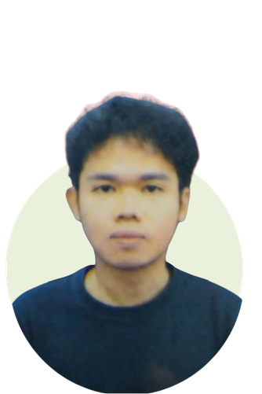

Malikfadillah01@gmail.com
Aku tunggu kabarmu
© 2026 Malik Fadillah. All Rights Reserved

Halo, saya
Mohamad Malik Fadillah Arwin
DKV GRADUATE | SMK CAHAYA SAKTI
Antusias dalam Graphic Design, 3D Modeling, and Visual Storytelling.
Mengubah ide menjadi karya visual
yang nyata.
Profil
Saya adalah mahasiswa Teknik Informatika di Politeknik Negeri Jakarta dengan latar pendidikan Desain Komunikasi Visual. Dengan dibekali pengetahuan desain digital, saya kini mendalami dunia pemrograman untuk memperluas kemampuan saya dalam bidang digital.
Edukasi
SMK CAHAYA SAKTI | 2022 - 2025
Politeknik Negeri Jakarta | 2025 - Saat ini
Pengalaman Kerja
(Multimedia & Content Specialist)
UP4 Sumber Daya Air | 2024
Mengelola desain estetika media sosial, dokumentasi
operasional, hingga produksi video profil perusahaan.
Multitoys | 2025
Spesialis desain visual produk dan konten Reels kreatif
untuk meningkatkan engagement media sosial.
Malikfadillah01@gmail.com
Aku tunggu kabarmu
© 2026 Malik Fadillah. All Rights Reserved